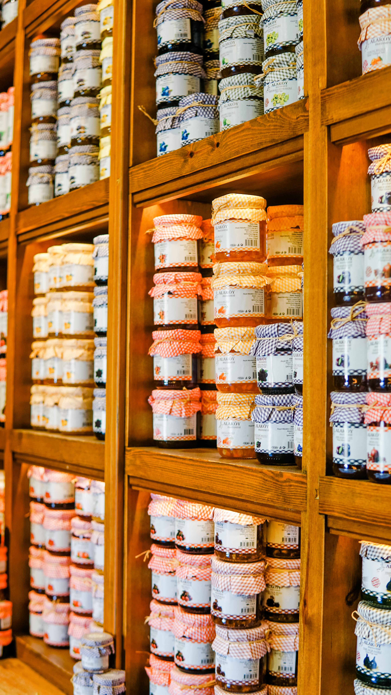

Mermeladas artesanales hechas con frutas frescas de Tucumán, cocidas a fuego lento, sin conservantes ni aditivos. Puro fruto, puro sabor.
Ver nuestras variedades
Las más elegidas por nuestros clientes
Hecha con frutillas frescas de la zona, dulzura natural y mucho cariño. La favorita de siempre.
Con duraznos tucumanos, textura suave y ese sabor que recuerda a la cocina de la abuela.
Naranja, mandarina y limón en combinaciones únicas. Frescas, aromáticas y llenas de vitamina C.